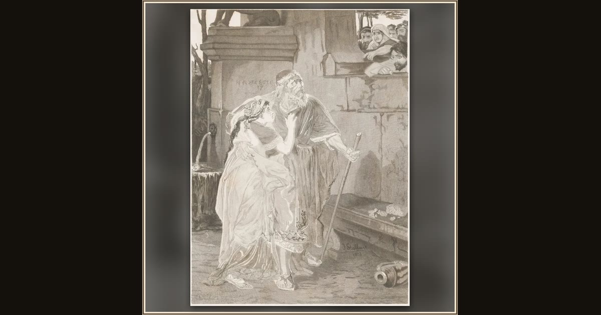

Blinde Oedipus geleid door Antigone
François de Meersman, after design by Joseph Stallaert · 1879 · rijksmuseum
Antigone supports the blind, staff-bearing Oedipus as onlookers watch from a wall. She takes his hand to guide him into exile (1710). Explore its place in Euripides's Plays, Phoenissae, line 1757.